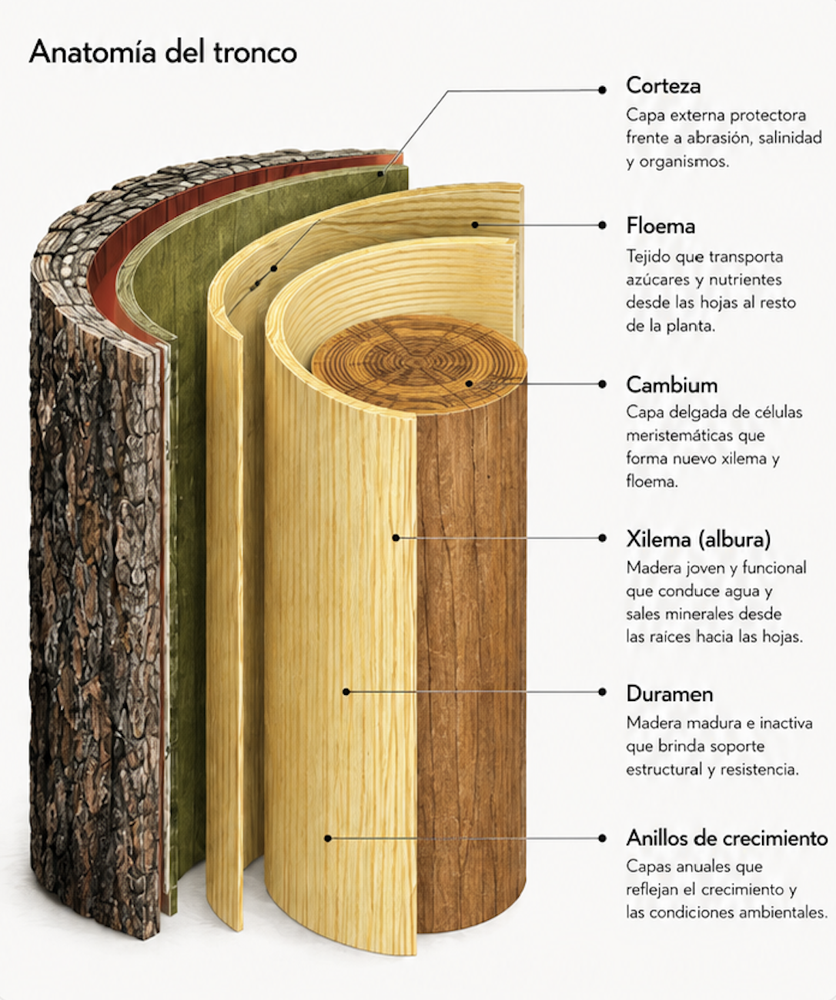
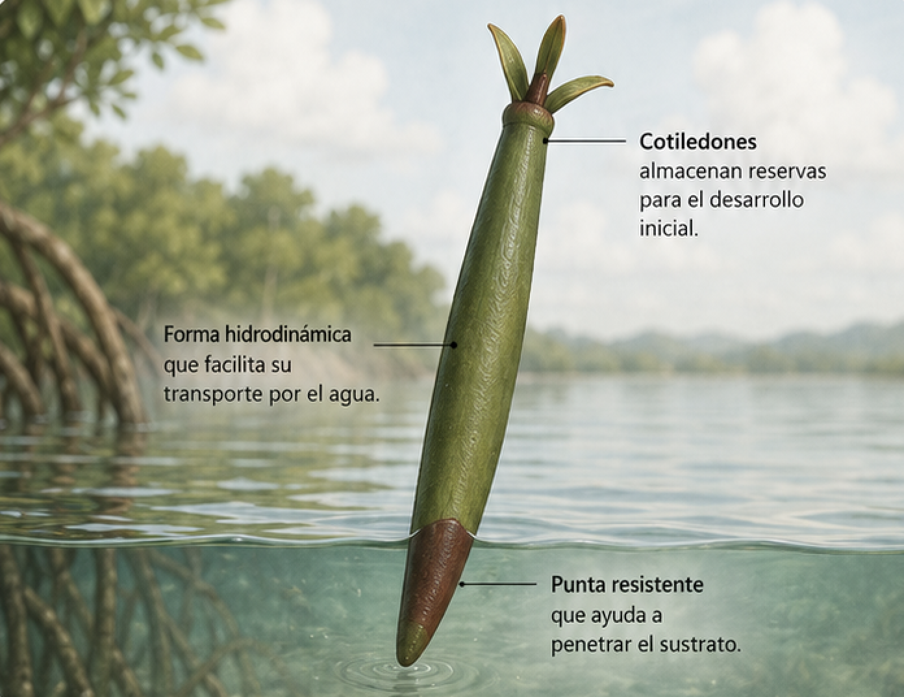
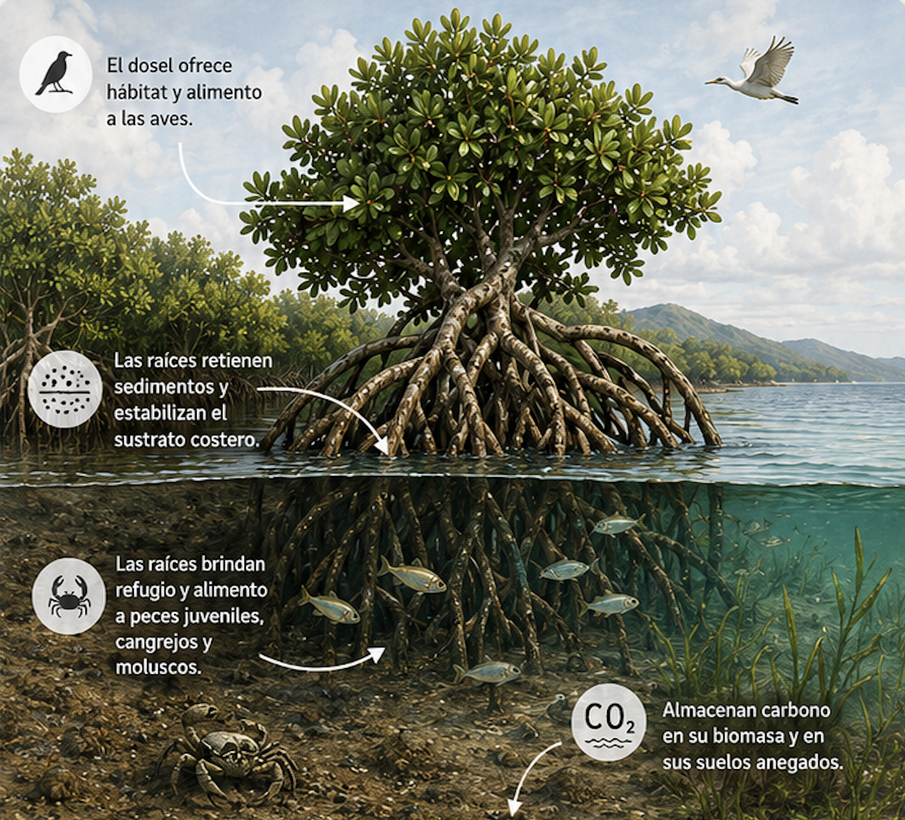

Texto de justificación pendiente — a completar con el criterio de conservación provisto por UEES.
Cargando modelo 3D…
Desliza para rotar
←Volver a la pieza
Mangle rojo

[ imagen — anatomia-tronco.jpg ]
Tronco
Corte transversal del tronco, mostrando las capas de corteza, floema, cambium, xilema y duramen.
Adaptaciones
El mangle rojo tiene adaptaciones únicas que le permiten vivir y prosperar en ambientes costeros.

[ imagen — adaptaciones-propagulo.jpg ]
Propágulo
El propágulo es la plántula del mangle rojo. Germina mientras aún está unido al árbol madre y, al caer al agua, puede flotar y viajar hasta encontrar un lugar adecuado para enraizar.

[ imagen — ecosistema-hero.jpg ]
Protección costera
Sus raíces retienen sedimentos y ayudan a amortiguar el oleaje.
Refugio de fauna
Las raíces sirven de vivero para peces juveniles, cangrejos, moluscos y aves.
Carbono azul
Los manglares almacenan carbono en su biomasa y en sus suelos anegados.